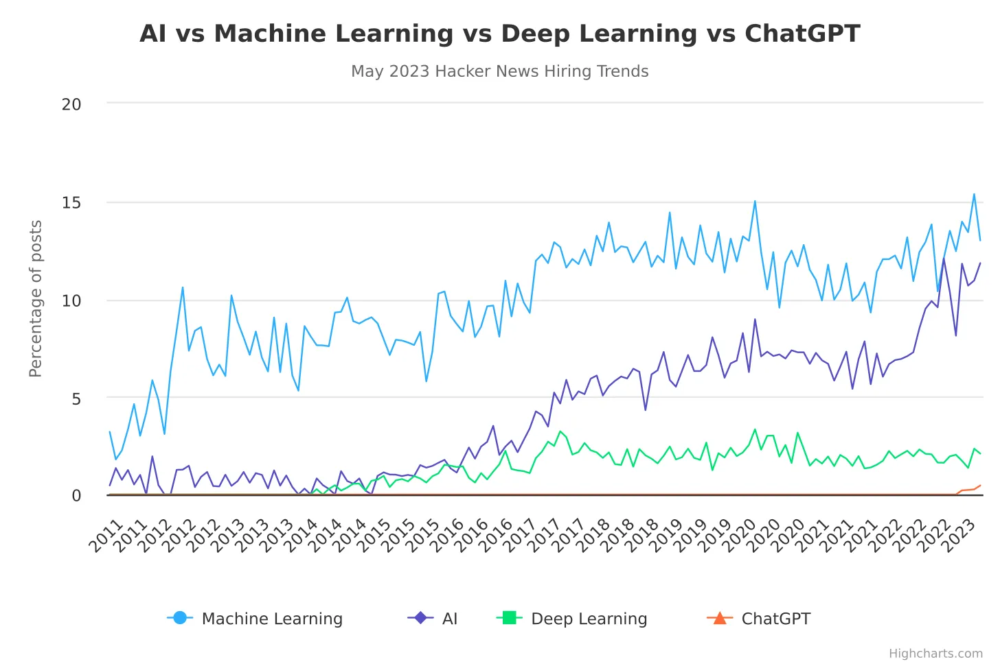
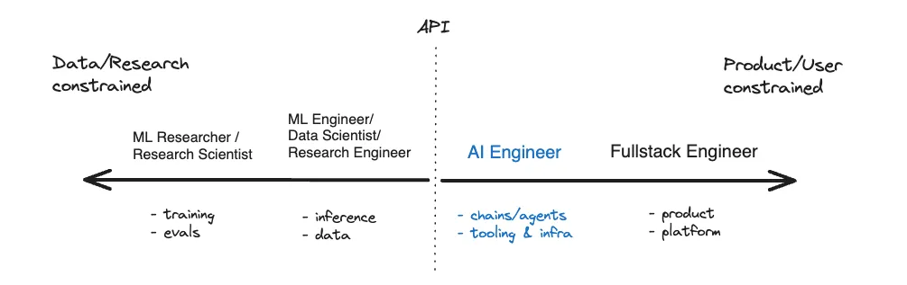
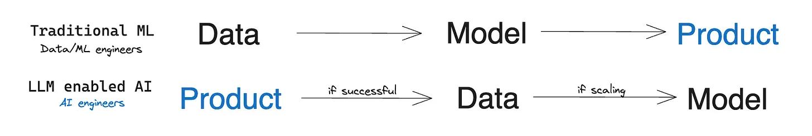

The tech industry is standing on the brink of a transformative era, heralded by the rise of AI Engineering. As businesses increasingly seek to integrate intelligent automation and sophisticated algorithms into their offerings, the AI Engineer emerges as a pivotal figure. This new cadre of professionals is equipped with a hybrid skill set that blends traditional software engineering with an innovative mastery of AI. Unlike their predecessors, whose role often revolved around carefully curated datasets and painstakingly tuned models, AI Engineers thrive in dynamic environments. They harness advanced AI models to rapidly iterate and prototype, bringing AI-driven solutions to market with unprecedented speed. The agility of this approach allows for a more organic development cycle, where AI applications evolve through direct interaction with end-users and real-world feedback, shaping the next generation of intelligent applications.
Data from industry-leading job platforms indicate a surge in AI-related roles, with projections showing that AI engineers are set to become the new vanguard. This isn't merely a shift in demand but a fundamental reconstruction of occupational archetypes within the tech sphere. The AI Engineer's role transcends the traditional boundaries of machine learning, encompassing a broader, more impactful range of responsibilities. These professionals are expected to not only understand and implement AI solutions but also to drive the strategic technological direction of their organizations, signaling a new epoch in the definition and scope of what it means to be an engineer in tech.
The toolbox of AI engineering is undergoing a significant diversification. Traditionally dominated by Python, the landscape is now embracing the versatility of JavaScript, a move that democratizes AI development by tapping into its vast community of developers. This integration caters to a generation of engineers who are as adept with front-end development as they are with AI, merging the realms of user interface design with AI functionalities. The proliferation of tools like TensorFlow.js and ONNX.js bridges the gap between machine learning and browser-based applications, paving the way for innovative AI-powered web applications that are accessible to a broader audience than ever before.
In the vanguard of technology, AI engineers are redefining our approach to problem-solving and innovation. As they engineer systems that can learn and adapt, they are establishing a synergy between human creativity and computational power. This new breed of engineers is leveraging AI to enhance and extend our capabilities, ensuring that AI is seamlessly integrated into the very framework of technological progress. It's an evolution that is less about replacement and more about enhancement, a partnership between human and machine intelligence that is crafting the next era of digital transformation.
As we close this discussion, it's clear that the role of AI engineers is not just a trend but a fundamental shift in the tech landscape. They are the architects of a future where artificial intelligence is embedded in the fabric of our digital lives, creating smarter, more intuitive technology that better serves humanity.